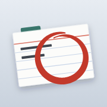
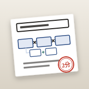

hondana のアプリ

知識の棚卸し読み終えた本の、忘れかけた頃の復習クイズ 推薦棚推薦した本の一覧。反応を押すとそのまま保存
ことばの在庫1枚2分、1日3枚。事柄を因数分解して言葉の在庫を増やすiPhone のホーム画面に置く
- 上のどれかを Safari でひらく
- 共有（□に↑。無ければ右下の「…」の中）→「ホーム画面に追加」
- 「Webアプリとして開く」はオンのまま「追加」
- ホーム画面からひらいて、最初に一度だけ GitHub のトークンを貼る（ほかのアプリにも同じトークン）
ここにあるのは入れ物だけです。本・読書メモ・記録・言語化のメモは非公開の hondana リポジトリにあり、トークンを貼った端末からだけ読めます。